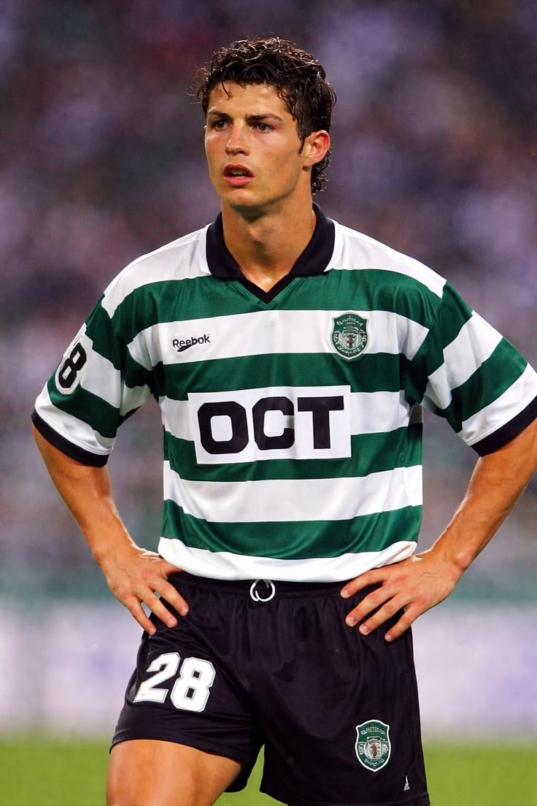
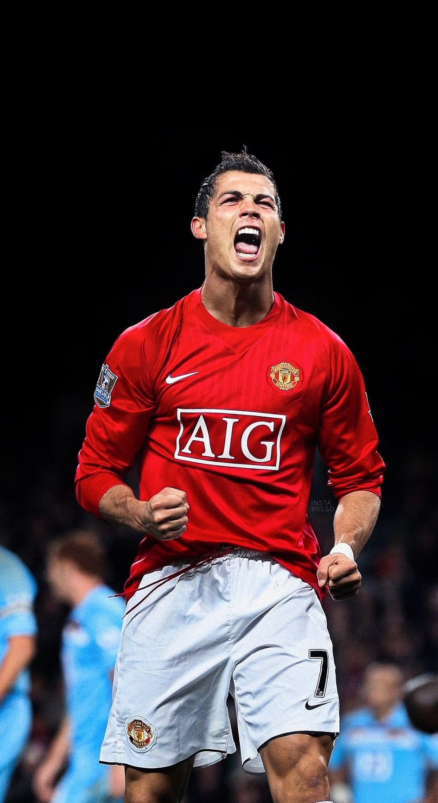
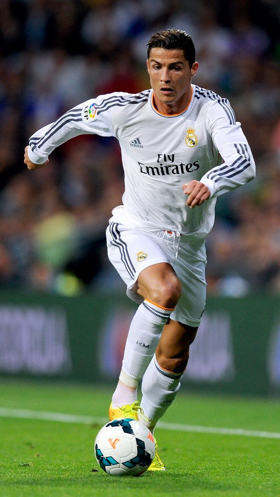
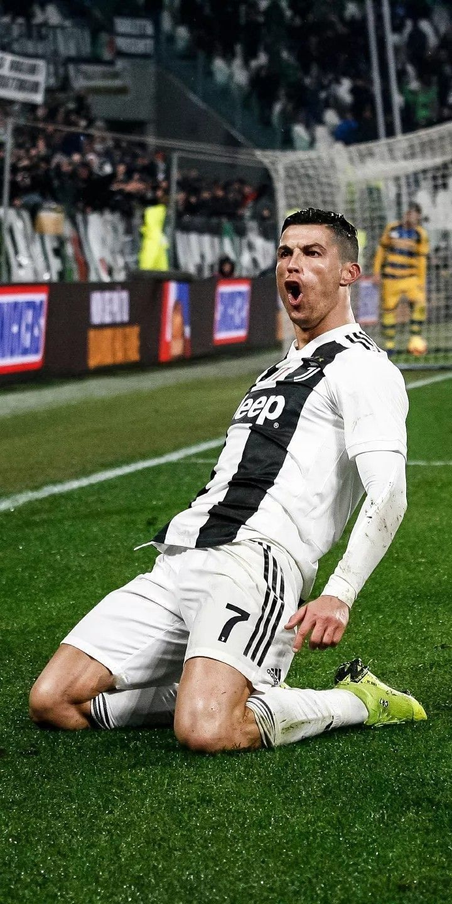
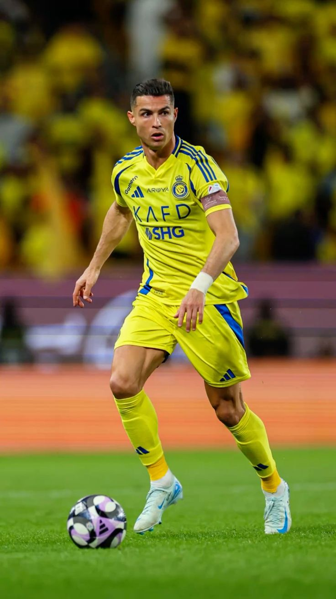

Топ футболистов
Криштиану Роналду
Список лучших футболистов

Криштиану Роналду душ Сантуш Авейру — португальский футболист, родившийся 5 февраля 1985 года на острове Мадейра. Он считается одним из величайших футболистов в истории и известен своей скоростью, мощным ударом, игрой головой и отличной физической подготовкой.
С раннего детства Роналду увлекался футболом. Свою профессиональную карьеру он начал в португальском клубе «Спортинг». Его талант быстро заметили представители крупнейших европейских клубов.
В 2003 году Роналду перешёл в английский клуб «Манчестер Юнайтед», где получил знаменитый номер 7. Именно там он стал одной из главных звёзд мирового футбола.

В составе «Манчестер Юнайтед» Криштиану Роналду значительно улучшил свою технику и результативность. Он стал регулярно забивать голы и помогал команде выигрывать важнейшие матчи и турниры.
Вместе с клубом Роналду несколько раз становился чемпионом Англии, а в 2008 году выиграл Лигу чемпионов УЕФА. В том же году он впервые получил «Золотой мяч».

В 2009 году Криштиану Роналду перешёл в «Реал Мадрид». Этот период стал одним из самых успешных в его футбольной карьере.
В составе мадридского клуба он забил огромное количество голов и стал лучшим бомбардиром в истории «Реал Мадрида». Вместе с командой Роналду несколько раз выиграл Лигу чемпионов и чемпионат Испании.
Именно в «Реале» проходило знаменитое спортивное соперничество Роналду с Лионелем Месси. В течение многих лет оба футболиста считались лучшими игроками мира.

В 2018 году Роналду перешёл в итальянский «Ювентус». В новом клубе он продолжил показывать высокую результативность и стал одним из главных игроков команды.
Вместе с «Ювентусом» Роналду выигрывал чемпионат Италии и другие национальные турниры. В 2021 году футболист вернулся в «Манчестер Юнайтед», где снова выступал под своим знаменитым номером 7.

Криштиану Роналду на протяжении многих лет является одним из главных игроков сборной Португалии. Он провёл огромное количество матчей за национальную команду и забил множество голов.
Главным достижением Роналду со сборной стала победа на чемпионате Европы 2016 года. Также Португалия с Роналду выиграла Лигу наций УЕФА.
Благодаря своим выступлениям за национальную команду Роналду установил множество международных рекордов и стал одним из самых узнаваемых футболистов Португалии.

За свою карьеру Криштиану Роналду получил множество индивидуальных и командных наград. Он неоднократно становился обладателем «Золотого мяча», выигрывал Лигу чемпионов и национальные чемпионаты.
Роналду известен не только своим футбольным талантом, но и профессионализмом, дисциплиной и отношением к тренировкам. Его знаменитый номер 7 стал частью бренда CR7.
Благодаря своим достижениям и большому количеству забитых голов Криштиану Роналду считается одним из величайших футболистов в истории мирового футбола.